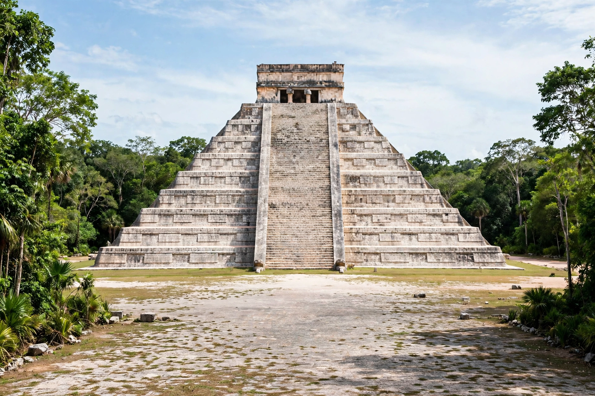

| Maya peoples | |
|---|---|
| Total population | c. 7–8 million (modern descendants) |
| Regions | Guatemala, Mexico (Yucatán, Chiapas, Tabasco, Campeche, Quintana Roo), Belize, Honduras, El Salvador |
| Languages | c. 30 Mayan languages; Spanish |
| Major groups | K'iche', Yucatec, Mam, Kaqchikel, Tzotzil, Q'eqchi' |
| Historic era | c. 2000 BCE – present |

The Maya peoples are an ethnolinguistic group of Indigenous peoples of Mesoamerica. They inhabit southern Mexico, Guatemala, Belize, and the western parts of Honduras and El Salvador, speak some thirty related Mayan languages, and descend from the builders of the pre-Columbian Maya civilization — famous for its hieroglyphic writing, mathematics, astronomy, and calendrics.
Maya civilization developed over three millennia, reaching its Classic-period height (c. 250–900 CE) in a network of competing city-states such as Tikal, Palenque, Copán, and Calakmul. The southern lowland cities were abandoned in the 9th–10th centuries, but northern Yucatán centres and highland kingdoms flourished until the Spanish conquest in the 16th century — a conquest fiercely resisted, with the last independent Maya kingdom, the Itza of Nojpetén, falling only in 1697. The colonial period and the 19th-century Caste War of Yucatán continued a long history of Maya resistance and survival; the suppression of Maya books by missionaries such as Diego de Landa destroyed much of the written record preserved in the codices.
Some seven to eight million people identify as Maya today. The largest groups include the K'iche', Mam, Kaqchikel, and Q'eqchi' of Guatemala and the Yucatec Maya of the Yucatán Peninsula. Mayan languages belong to a single family whose diversity rivals that of Indo-European; the ancient script of the codices was deciphered in the later 20th century. Traditional life centres on maize agriculture (the milpa), markets, Catholic–Maya syncretic religion, and in the Chiapas and Guatemalan highlands, distinctive woven dress that encodes community identity.
The Maya suffered grievously during Guatemala's civil war (1960–1996), when the military regime's counterinsurgency targeted Maya communities; K'iche' activist Rigoberta Menchú won the Nobel Peace Prize in 1992. The K'iche' epic Popol Vuh, with its Hero Twins narrative, remains the most celebrated surviving work of Maya literature.
Maya civilization · Popol Vuh · Maya codices · Mayan languages · Mesoamerica